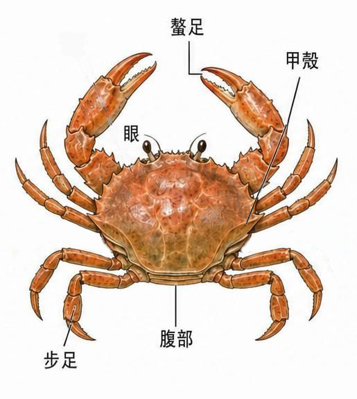
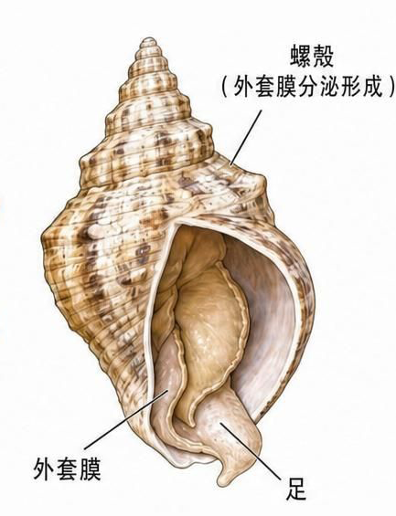
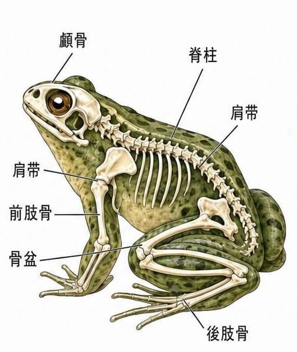
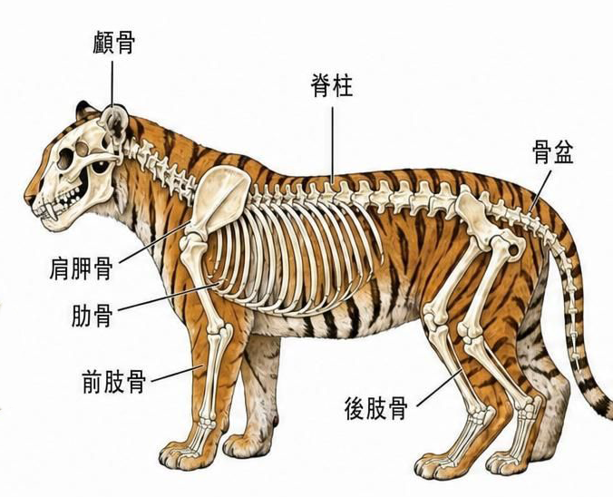
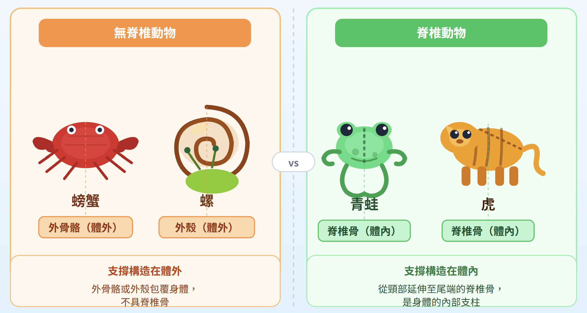

觀察動物標本時，有些動物會留下清楚的骨架，有些動物則保留外形。這一頁要學會用「脊椎骨」作為第一個分類線索。
動物界可以先用一個重要線索分類：是否具有脊椎骨。有脊椎骨的動物稱為脊椎動物；不具有脊椎骨的動物，則屬於無脊椎動物。
課本暖身操中，蛙和虎從頸部到尾端都有一串骨骼，這就是脊椎骨，所以牠們是脊椎動物。
蟹和螺沒有脊椎骨，但蟹有外骨骼，螺有外殼，這些構造也可以幫助形成或保護牠們的外形。





觀察上圖可以發現， 從頸部延伸到尾端有一排骨骼，稱為 ，這條骨骼位於身體 ，是牠們的身體支柱。